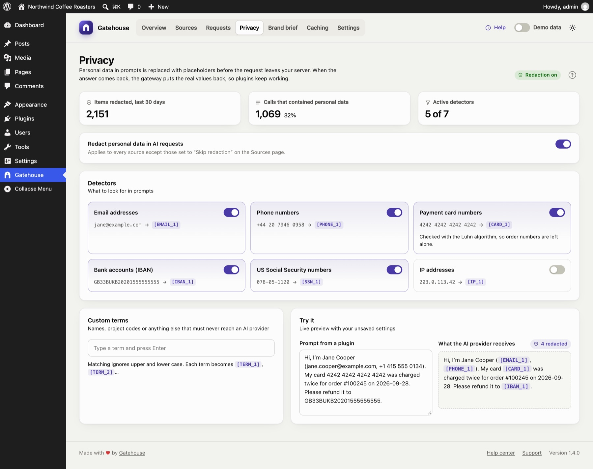
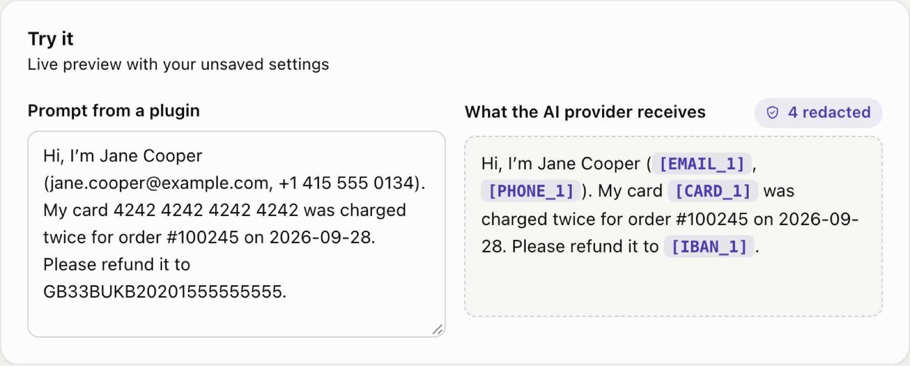

Privacy and redaction
AI plugins often send customer data to AI providers without you noticing: a support bot forwards a customer's email address, a form plugin sends a phone number. Gatehouse replaces that data with placeholders before the request leaves your server, and puts the real values back in the answer.

How it works#
- A plugin sends a prompt such as: "Reply to Jane at jane@example.com about her order."
- Gatehouse changes it to: "Reply to Jane at [EMAIL_1] about her order."
- The AI provider only ever sees
[EMAIL_1]. - If the answer mentions
[EMAIL_1], Gatehouse swaps the real address back in before the plugin receives the answer.
The plugin works as before, and the provider never received the address.
Details:
- Consistent placeholders. Within one request, the same value always gets the same placeholder, so the model can still tell that two mentions refer to the same thing.
- Exact restoring. Each distinct value gets its own placeholder, so the original is restored exactly as written. For custom terms, "Project Falcon" and "project falcon" become
[TERM_1]and[TERM_2]. - Only text is checked. Images, files, audio, tool definitions and output formats are left untouched.
Turning redaction on and off#
Redact personal data in AI requests controls redaction for the whole site. It is on by default.
To exempt a single plugin, open its policy on the Sources page and turn on Skip redaction.
Detectors#
Each card is one kind of data, with an example of what it catches. Switch each one on or off.
| Detector | Default | Example | Notes |
|---|---|---|---|
| Email addresses | On | jane@example.com → [EMAIL_1] |
|
| Phone numbers | On | +44 20 7946 0958 → [PHONE_1] |
Grouped numbers with 8–15 digits. Dates (2026-09-28), version numbers (6.4.3) and decimal amounts are left alone. |
| Payment card numbers | On | 4242 4242 4242 4242 → [CARD_1] |
Only numbers that pass the card checksum (Luhn), so order and invoice numbers are not touched |
| Bank accounts (IBAN) | On | GB33BUKB20201555555555 → [IBAN_1] |
|
| US Social Security numbers | On | 078-05-1120 → [SSN_1] |
Only the 123-45-6789 format |
| IP addresses | Off | 203.0.113.42 → [IP_1] |
Off by default because IP addresses are often harmless in technical prompts |
Names are not detected automatically. Recognising names reliably would mean sending your text to another service. Add the names that matter to you as custom terms.
Custom terms#
Add anything that must never reach an AI provider: key customers, staff names, product code names, internal URLs.
- Type a term and press Enter (or a comma) to add it. Click × on a term to remove it.
- Matching ignores upper and lower case.
- Each term becomes
[TERM_1],[TERM_2]and so on, and is restored in the answer. - Terms must be at least two characters. You can add up to 200.
Try it#
The Try it card shows exactly what an AI provider would receive. It uses your current settings, including changes you haven't saved yet.

Paste a prompt on the left. The right side shows the redacted version, with placeholders highlighted and a count of redacted items.
The numbers at the top#
- Items redacted, last 30 days.
- Calls that contained personal data, and what share of all calls that is.
- Active detectors, counting custom terms as one detector.
Saving#
Changes are not applied until you click Save changes in the bar at the bottom of the screen. Discard undoes them.
Limits#
- Redaction covers calls made through the WordPress AI Client to Anthropic, OpenAI and Google. A developer can add other providers; see For developers.
- Placeholders are restored when the answer contains them exactly. If a model rewrites a placeholder (for example "EMAIL 1" without brackets), it can't be restored. If that matters for a plugin, turn on Skip redaction for that plugin only.
- Redaction is pattern-based. It greatly reduces what leaves your site but can't guarantee that no personal data is ever sent. Use custom terms for anything sensitive that isn't a standard format.
Still stuck? Check Troubleshooting and the FAQ, or ask on the support forum. Inside WordPress, click Help at the top right of Gatehouse.